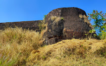
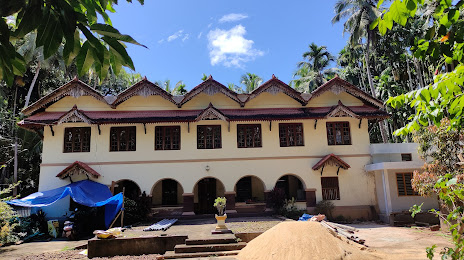

Facts about kozhikodu
Kozhikode is a coastal city in the south Indian state of Kerala. It was a significant spice
trade center and is close to Kappad Beach, where Portuguese explorer Vasco da Gama landed
in 1498. The central Kozhikode Beach, overlooked by an old lighthouse, is a popular spot
for watching the sunset. Inland, tree-lined Mananchira
Square, with its musical fountain, surrounds the massive Mananchira Tank, an artificial pond.
MUST VISIT PLACE IN KAZARGODU
CHANDREAGIRI FORT
Chandragiri Fort is an historical fort, built
in the 11th century located in Chandragiri, Tirupati in Andhra Pradesh, India. Although
mostly associated with the Vijayanagara Emperors, it was built much earlier in 11th century
by the Yadava rulers. In 1460.A.D. Odra Gajapati Kapilendra Dev Captured the Chandragiri Fort.
MAIPADY PALAM
This imposing edifice is situated on Kasaragod-Perla road, about 8 km from Kasaragod town.
The palace was once the seat of the Kumbala Kings. Around 3 km away is Madhur, a village
famous for its Srimad Anantheswara Vinayaka Temple. Kasaragod Railway Station is the nearest railhead.
MALIK DHINAR MALIK
Over the years, Kasaragod acquired the considerable importance as a centre of Islam on the west coast.
It is the site of one of the mosques believed to have been founded by Malik Deenar. According
to Qissat Shakarwati Farmad, the Masjids at Kodungallur, Kollam, Madayi, Barkur, Mangalore, Kasaragod,
Kannur, Dharmadam, Panthalayini, and Chaliyam, were built during the era of Malik Dinar, and they are
among the oldest Masjids
in Indian Subcontinent.[1] It is believed that Malik Dinar was died at Thalangara in Kasaragod town.